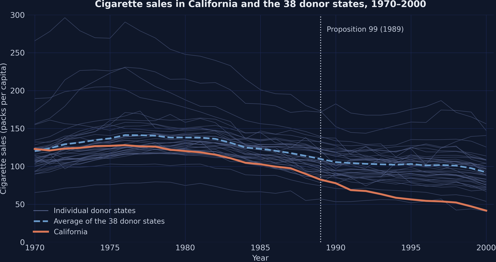
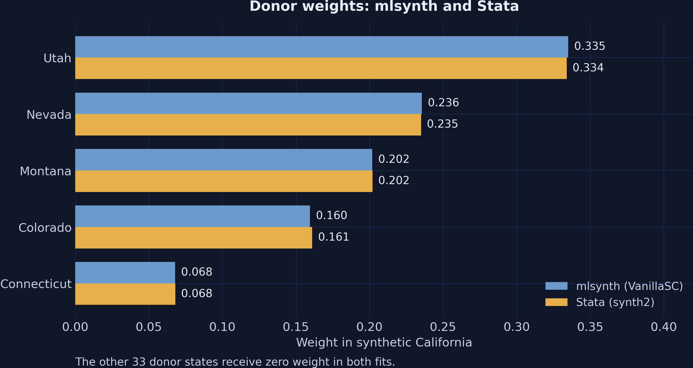
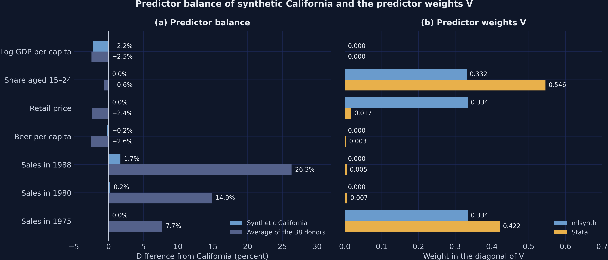
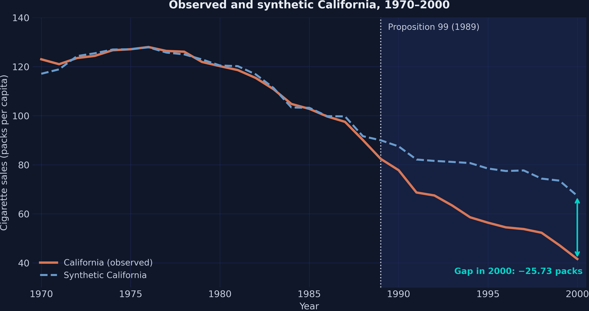
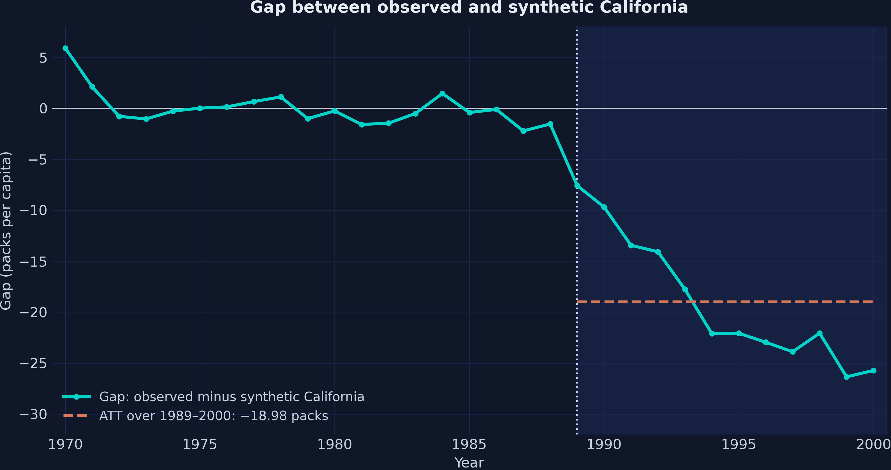
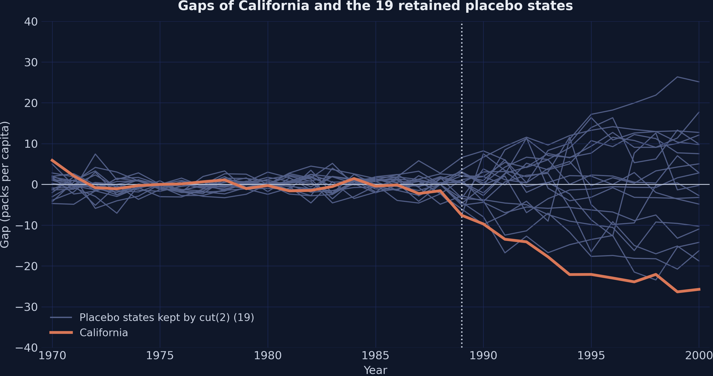
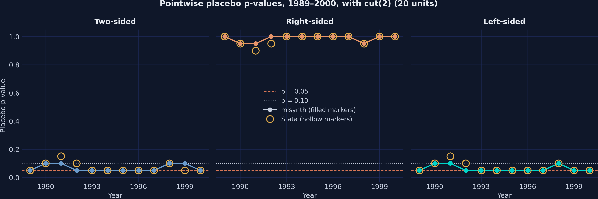
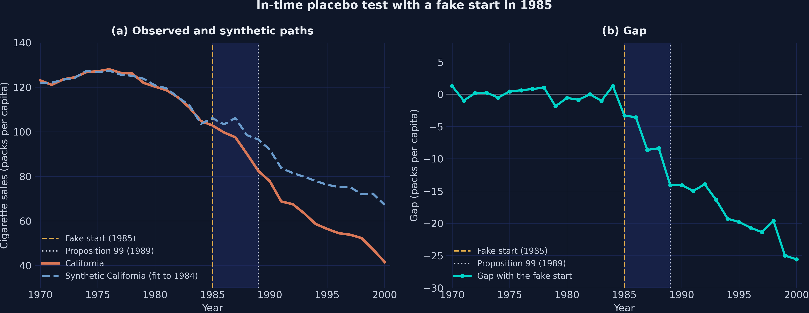
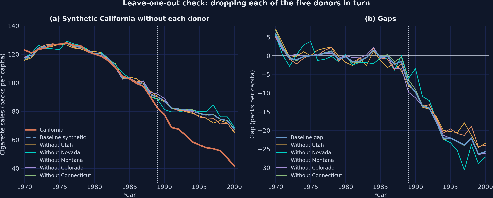
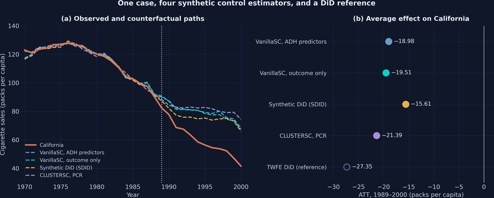

Cigarette sales fell everywhere, so did Proposition 99 change anything?
In November 1988, California voters approved Proposition 99: a tax increase of 25 cents per pack from January 1989, plus anti-smoking education.
Average sales in California fell from 116.21 packs per capita in 1970–1988 to 60.35 in 1989–2000. Yet the average donor state also fell, by 28.51 packs, without any program.
A before-and-after comparison mixes the program with a national decline.
Before you look: did California move with the average state before 1989?
In 1970, California sold 2.92 packs per capita more than the average of the 38 donor states. How large is the gap in 1988, the last year before the program?
A. Smaller: the two series converge
B. Similar: the average tracks California closely
C. Far larger: California falls well below the average
The average state is a poor twin: California was already falling faster

California (orange), the 38 donor states (gray), and their average (dashed blue), 1970–2000.
By 1988, California sat 23.72 packs below the donor average, so the simple average fails before the program starts.
The plan: build a synthetic California in mlsynth, then try to break it
Data: 39 states from 1970 to 2000, and one treated state
Method: a weighted recipe of donor states and the gap it leaves
Tool: one mlsynth dictionary and one call to fit()
Tests: placebos in space and in time, and leave-one-out refits
Checks: the Stata benchmark, three other estimators, and five misreadings
Five times along the way, the room predicts the result before the reveal.
The Investigation
Act II
The lab: 39 states, 31 years, one treated state, and one estimand
Panel: 39 US states from 1970 to 2000, or 1,209 state-year rows
Outcome: cigarette sales per capita, in packs
Treated: California from 1989; donors: the other 38 states
Predictors: four covariates averaged over 1980–1988, plus sales in 1975, 1980, and 1988
The estimand is the ATT: the effect of Proposition 99 on California alone, over 1989–2000.
A synthetic control is a weighted recipe of donor states
The superscript \(N\) marks sales without the program, and a negative ATT means fewer packs than in synthetic California.
Once the weights are known, the counterfactual is simple arithmetic: a weighted average of donor sales.
One configuration dictionary drives every mlsynth estimator
config = {"df": panel, "outcome": "cigsale", "treat": "treated","unitid": "state", "time": "year","covariates": COVARIATES, # four covariates, three lags"covariate_windows": WINDOWS, # 1980–1988, or one year per lag"backend": "mscmt", # nested search over V and W"canonical_v": "min.loss.w", "seed": 42,"inference": False, "display_graphs": False,}res = VanillaSC(config).fit() # res.att, res.donor_weights, res.gap
One dictionary describes the data and the settings, and one call to fit() returns the result object.
Before you look: how large is the share of Utah in the recipe?
Five of the 38 donor states receive positive weight, led by Utah, the state with by far the lowest sales. How much of synthetic California does Utah supply?
A. More than half: Utah alone is nearly the whole recipe
B. About one third: the other four shares differ widely
C. About one fifth: the five shares are nearly equal
Five states build synthetic California, led by Utah

Donor weights of mlsynth (blue) and Stata (gold); the other 33 donor states receive zero weight in both fits.
Utah supplies one third of the recipe, and 33 of the 38 donors receive exactly zero.
Before you look: will mlsynth and Stata agree on the predictor weights?
The two programs agree on the donor weights within 0.002. Stata puts 0.546 of the predictor weights on the age share and 0.422 on sales in 1975. What will mlsynth report?
A. Very different predictor weights, yet the same donor weights
B. The same predictor weights, since equal donor weights require them
C. Different predictor weights, so one program must contain an error
The same donor weights \(W\) arise from very different predictor weights \(V\)

(a) Percent gaps from California on the seven predictors; (b) the predictor weights \(V\) of mlsynth (blue) and Stata (gold).
Report \(V\) for transparency, but never rank predictors by it.
Synthetic California tracks California before 1989, with an RMSE of 1.754 packs

Observed California (orange) and its synthetic twin (dashed blue), 1970–2000; shading marks 1989–2000.
The typical miss before 1989 is 1.5 percent of mean sales, close enough for a credible counterfactual.
By 2000, California sold 38 percent fewer packs than its synthetic twin
−38.2%
In 2000: 41.6 packs per capita in California against 67.33 in synthetic California, a gap of −25.73 packs
The gap widens through the 1990s, for an ATT of −18.98 packs per capita

Yearly gap between observed and synthetic California, with the ATT over 1989–2000 as a dashed orange line.
On average, California sold 18.98 fewer packs per capita per year than its twin, a reduction of 23.9 percent.
The Resolution
Act III
Before you look: which states rank just below California?
Each state takes a turn as the treated state. California has the largest MSPE ratio: its misses after 1989 are large relative to its misses before 1989. Which states rank just below it?
A. Badly fitted states, whose large early misses inflate their ratios
B. The donors of synthetic California, led by Utah
C. Well-fitted states, such as Georgia and Virginia
California has the largest MSPE ratio of all 39 states, so \(p = 1/39 = 0.026\)
California is the most extreme of the 39 states, and 0.026 is the smallest p-value that 39 states allow.
The cut(2) filter keeps 20 states, and California still ranks first: \(p = 0.050\)

Gaps of California (orange) and the 19 placebo states that cut(2) retains (gray), 1970–2000.
The filter buys comparable gaps at a price: the floor of the p-value rises from 0.026 to 0.050.
Year by year, the left-sided p-value sits at its floor of 0.050 in 9 of 12 years

Pointwise placebo p-values with cut(2), 1989–2000; filled markers show mlsynth, and hollow gold markers show Stata.
For a program designed to cut sales, the left-sided test is the relevant one, and it never exceeds 0.100.
A fake start in 1985 yields gaps about one third the size of the real effect

In-time placebo with a fake start in 1985: (a) observed and synthetic paths; (b) the gap, with lines at 1985 and 1989.
The in-time test supports the timing of the effect only in part.
Before you look: drop Utah and refit; which state takes over?
Utah supplies one third of synthetic California. Remove it, refit the model with the remaining 37 donors, and compare the result with the baseline.
A. New Mexico takes over, the fit worsens, and the ATT stays near the baseline
B. Nevada takes over, the fit improves, and the ATT doubles
C. No state can replace Utah, and the ATT turns positive
Dropping any one donor keeps the ATT between −19.29 and −17.52 packs

Leave-one-out refits that drop each of the five donors in turn: (a) synthetic paths; (b) gaps.
No single donor drives the result: every refit keeps a large, negative gap after 1988.
Python reproduces the Stata benchmark at every step that matters
Quantity
Stata synth2
mlsynth VanillaSC
Agreement
Donor weights, Utah to Connecticut
0.334 to 0.068
0.335 to 0.068
Within 0.002
Pre-treatment RMSE
1.756
1.754
Close
ATT, packs per capita per year
−19.00
−18.98
Exact with the Stata weights
Placebo rank and p-value
1 of 39; 0.026
1 of 39; 0.026
Exact
States kept by cut(2) and p-value
20; 0.050
20; 0.050
Exact, the same 20 states
\(V\) on age share, price, and sales in 1975
0.546, 0.017, 0.422
0.332, 0.334, 0.334
Different: \(V\) is not identified
Every remaining difference has a documented source: the optimizer, rounding, a non-identified \(V\), or a definition.
Four mlsynth estimators, one sign: the ATT ranges from −15.61 to −21.39

(a) Observed California and four counterfactual paths; (b) the four ATTs and a TWFE reference at −27.35 (hollow marker).
All four estimators find a large reduction, while TWFE inherits the poor fit of the simple average.
The gap was already large before Proposition 10 raised the tax again in 1999
Objection. The gap of 38.2 percent in 2000 measures Proposition 99 alone.
Response. In January 1999, Proposition 10 added 50 cents per pack, so the gaps of 1999 and 2000 mix two programs. Yet the gap stayed below −22 packs in every year from 1994 to 1998.
The growth of the effect does not rest on the last two years.
Five tempting misreadings
Common misconceptions
“Synthetic California is built from its neighbors”: only Nevada borders it
Myth. Synthetic California blends the neighbors of California.
Truth. Of the five donors, only Nevada borders California. Utah (0.335), Montana (0.202), Colorado (0.160), and Connecticut (0.068) enter because their weighted combination tracks sales before 1989.
The recipe is chosen for its fit, not for its geography.
“\(p = 0.026\) is the probability of no effect”: it is a rank, not a probability
Myth. A p-value of 0.026 means a 2.6 percent chance that Proposition 99 had no effect.
Truth. The p-value is the share of states whose MSPE ratio is at least as large as that of California. It cannot fall below \(1/39 = 0.026\), and it equals \(1/20 = 0.050\) after cut(2).
The p-value describes a rank in a placebo distribution, not the probability of a hypothesis.
“A sound in-time placebo shows zero gaps”: the standard is small gaps and no break
Myth. A valid in-time placebo must show fake gaps of exactly zero.
Truth. Prediction errors grow beyond the fitting period, so fake gaps are rarely zero. The standard is small fake gaps and no break at the fake date. Here the fake gaps average −5.97 packs, about one third of the −18.75 after 1989, and the gap already steps down in 1985.
By this standard, the in-time test of this tutorial passes only in part.
“The smallest pre-treatment error wins”: a close fit is necessary, not sufficient
Myth. The estimator with the lowest pre-treatment RMSE is the most credible.
Truth. CLUSTERSC has the lowest RMSE, 1.503, but 11 of its 34 donors carry negative weights, which extrapolate beyond the donors. The outcome-only fit beats the baseline by construction (1.656 against 1.754), yet its placebo test ranks California only third, with \(p = 0.077\).
A close fit is necessary for credibility, but it does not certify the counterfactual.
“cut(2) can only strengthen the evidence”: it trades resolution for comparability
Myth. Dropping badly fitted placebos with cut(2) can only strengthen the evidence.
Truth. The filter shrinks the comparison set from 39 to 20 states, so the smallest attainable p-value rises from 0.026 to 0.050. With a cutoff of 1, only 9 states remain, and the p-value cannot fall below 0.111, although California still ranks first.
The filter buys comparability of the gaps at the cost of resolution.
A synthetic twin earns trust by fitting the past and keeps it only by surviving attempts to break it.